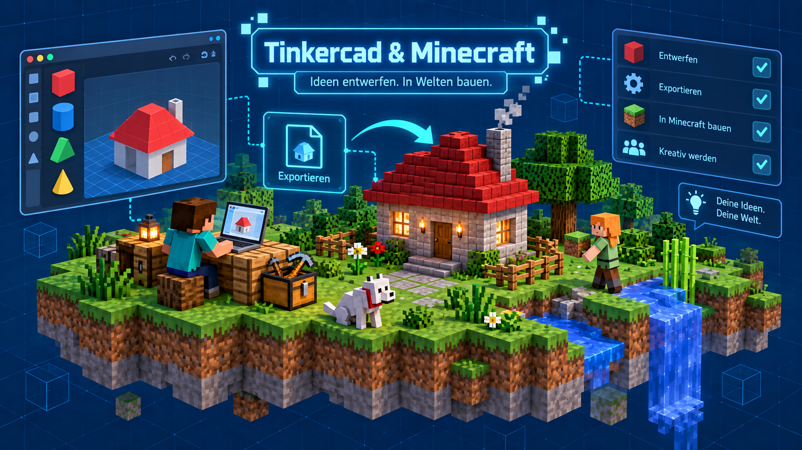

Einführung
Tinkercad ist eine kostenlose Online-Plattform zum Konstruieren, Programmieren und Experimentieren.
Den Zugang zu Tinkercad per Klassencode und Schüler-Anmeldename sowie eine Einführung erhältst du in der AG.
Wir nutzen Tinkercad, um 3D-Modelle zu entwerfen und diese als Blöcke zu exportieren. Anschließend können die Modelle in Minecraft weiterverwendet werden.

Grundlagen
- Anmeldung bei Tinkercad mit dem Klassencode JS8HAKLAX unserer AG und deinem persönlichen Schüler-Anmeldename
- 3D-Entwürfe in Tinkercad kennenlernen
- 3D-Modelle aus Tinkercad als Blöcke exportieren
- Blöcke in Minecraft verwenden
- Codeblocks zur Programmierung von 3D-Modellen in Tinkercad verwenden